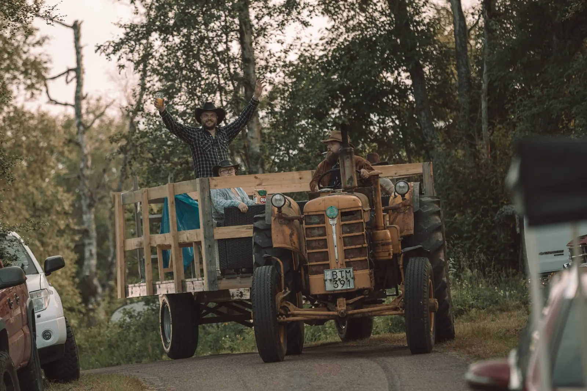
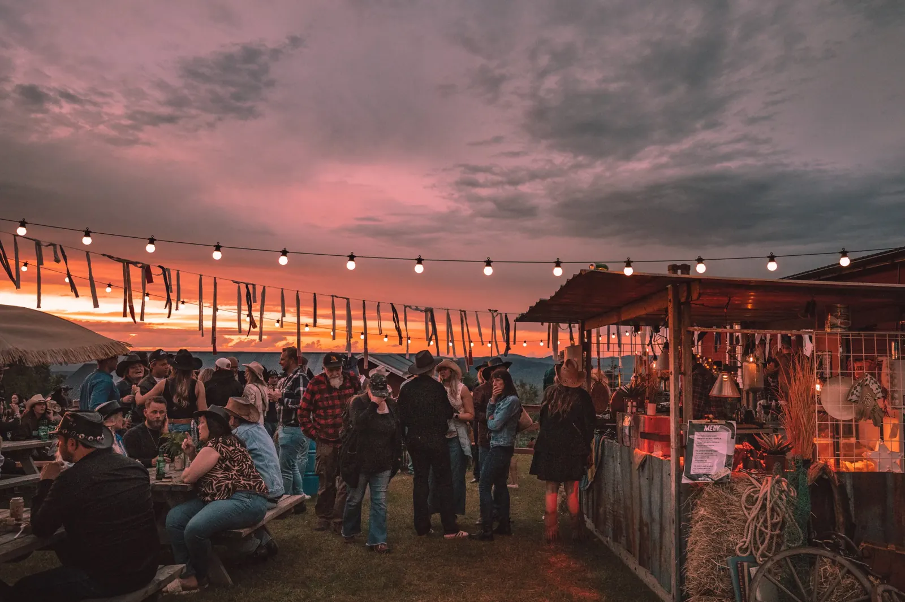

Livemusik på tre scener
Utescenen, Rotundan och Publadan. Från eftermiddag till långt in på natten.
Utkast till nya rivervalley.se – inte live än


– Evertsberg Älvdalen
Biljetterna släpps om
Biljettsläpp 1 december kl. 12.00
Take the country road to Boggberget
Boots som dansar och cowboyhjärtan som slår extra hårt. För sjätte året samlas vi uppe på Boggberget i Evertsberg, Älvdalen.
Du får den bästa countrymusiken, såklart. Men också linedance, rodéo, publada, god mat och dryck, tatueringslada, pop up-butiker och Dalarnas bästa stämning. Förra året kom drygt 2 600 besökare. Ta med en vän och kom!

Mer än musik
Uppträdanden varje timme, massor av gott käk, roliga pop up-butiker och en skön blandning av människor. Tråkigt blir det inte.
Utescenen, Rotundan och Publadan. Från eftermiddag till långt in på natten.

Vem är festivalens coolaste cowboy? Kanske en cowgirl. Tjuren väntar på dig hela helgen.

Rycker det i bootsen? Lär dig stegen under festivaldagarna. Uppvisning på lördag för dig som hellre tittar.

I tattooladan hittar du tatuerare och en spådam. Missa inte!

Hattar, boots och allt däremellan längs marknadsgatan. Glömt hatten hemma? Lugnt.

Cowboyrestaurang, matförsäljning och två barer. Country-quiz i Saloonen både fredag och lördag.
Line-up 2027
Vi spikar årets line-up just nu. Följ oss på Instagram och Facebook, så får du veta först.

Sätt en påminnelse
Festivalpass och campingplatser släpps samtidigt. Förra året tog campingplatserna slut, så var snabb på avtryckaren, partner.
Skrivet om oss
Innan du åker
Dagtid är alla åldrar välkomna, och barn under 12 år går in gratis i målsmans sällskap. På kvällen är det 18-årsgräns. Exakta tider kommer.
Hundar är välkomna på området. Självklart tar du hand om både jycke och bajskorvar.
Campingstolar och filtar får gärna följa med. Egen alkohol på festivalområdet betyder hemgång.
Parkering finns på campingområdet. Blir det fullt erbjuder vi parkering vid Evertsbergs bygdegård, med transfer upp till Boggberget.
Alla över 65 år har rabatt, och fyller du 80 eller mer går du in gratis.
Campa på berget mitt i festen, eller bo i Evertsberg eller Älvdalen, tolv kilometer bort.
Samma gäng, fler äventyr
River Valley drivs av Vildbyn i Älvdalen, som också gör hantverksfestivalen Backwoods på Rotsågen. Nästa gång: lördag 15 maj 2027.